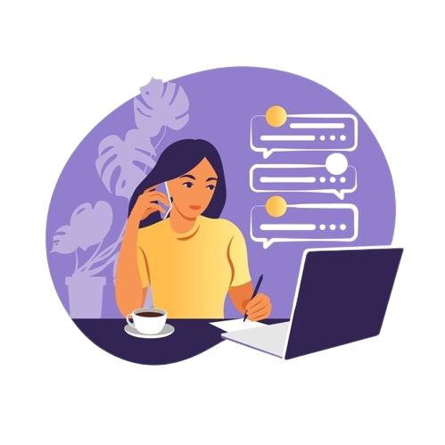
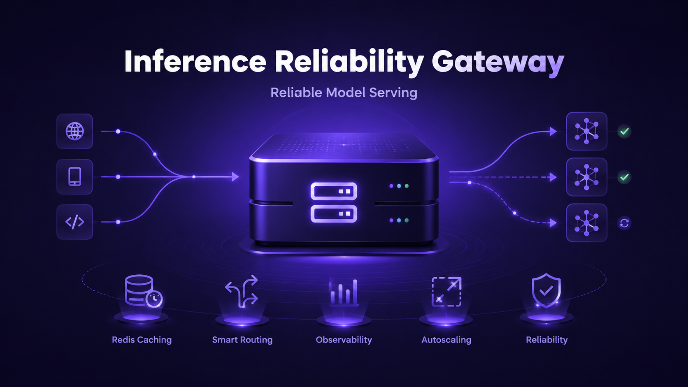
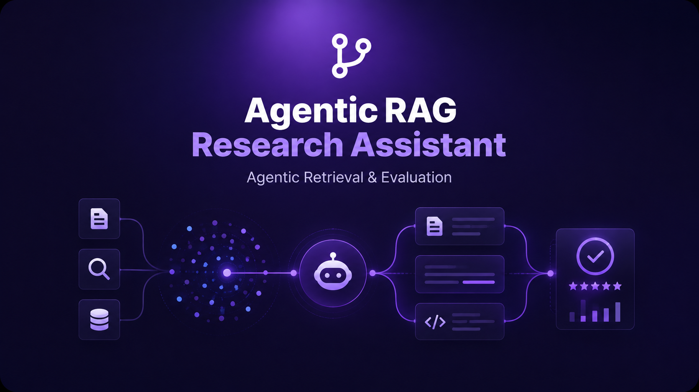
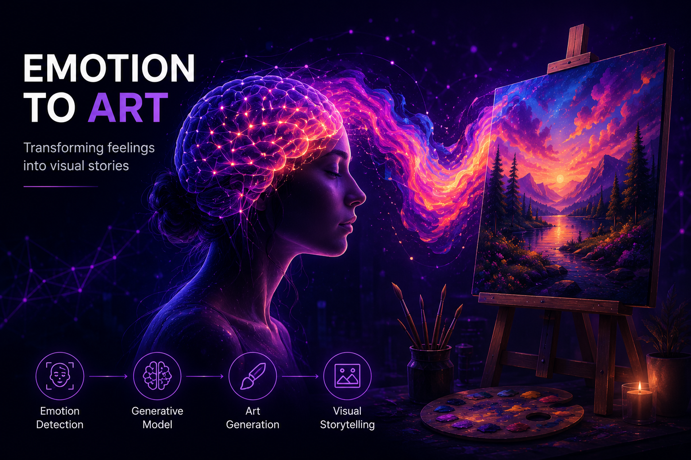
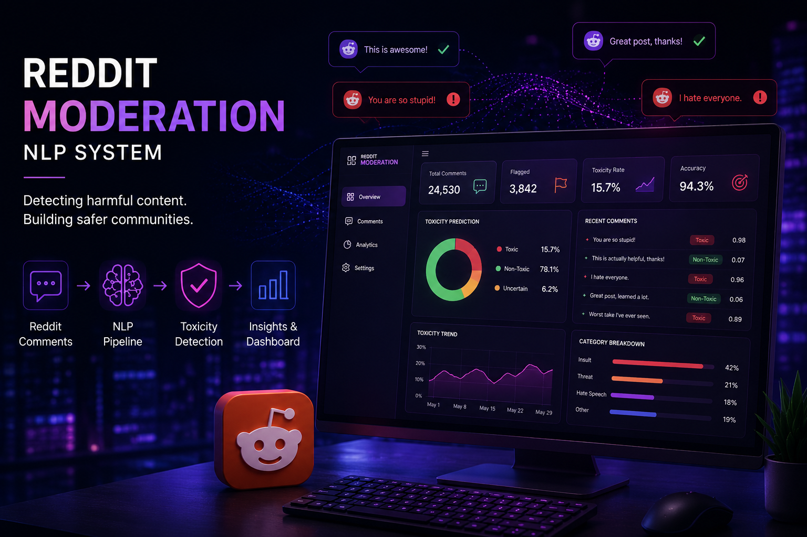
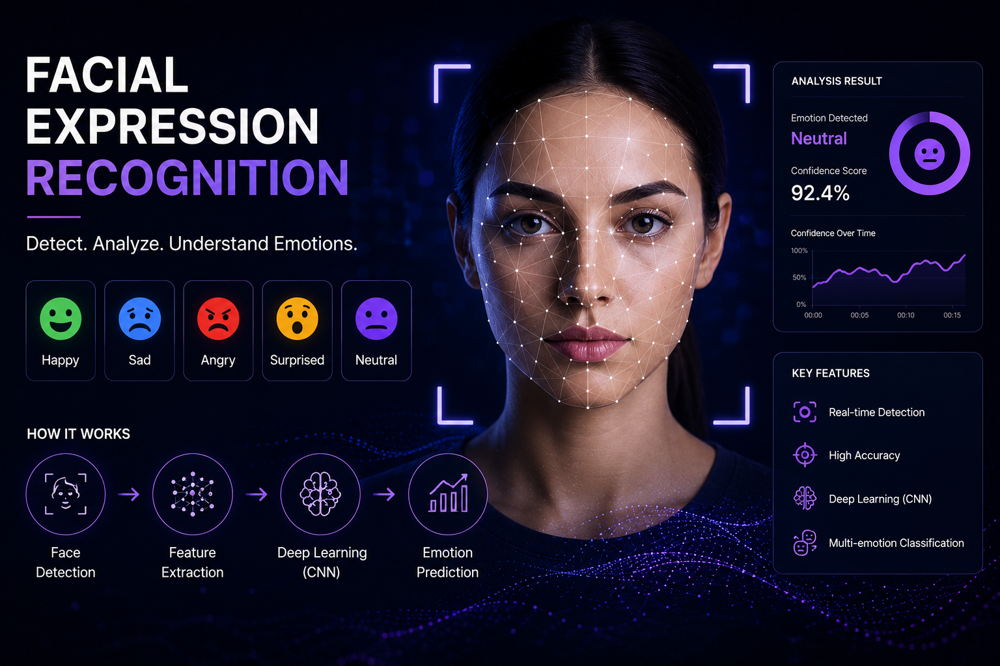

AI Systems • ML Infrastructure •
Applied ML
Hi, I’m Saee Desai.
I’m an AI and Machine Learning Engineer who learns by building end-to-end systems, including agentic RAG, model evaluation, reliable inference services, cloud infrastructure, and secure data pipelines.
AI Systems
Reliability
RAG & Evals
Cloud ML
About Me
I turn unfamiliar problems into working, tested systems; one experiment, failure, and engineering decision at a time.

I completed my M.S. in Data Science at the University of Maryland, College Park, where I worked across machine learning, NLP, deep learning, data systems, and computer vision.
My recent work focuses on the engineering around AI: building retrieval pipelines, evaluating model behavior, serving inference reliably, handling overload and failures, monitoring application metrics in deployed prototypes, and deploying systems to AWS. I enjoy projects where model quality and software reliability both matter.
I’m especially interested in entry-level AI Engineer, Machine Learning Engineer, and AI Platform roles where I can contribute hands-on, learn from strong engineers, and grow into deeper ownership over time.
6+End-to-End Projects
2First-Author Papers
3.8GPA
Technical Focus
A practical stack spanning model development, retrieval, backend engineering, reliability, cloud deployment, and evaluation.
LLM Systems & Retrieval
Backend & Reliability
Cloud & DevOps
Featured Work
Projects that demonstrate how I approach model quality, backend reliability, deployment, experimentation, and technical trade-offs.

Inference Reliability Gateway
FlagshipBuilt and deployed an async FastAPI gateway with Redis caching, cost-aware routing, retries, circuit breaking, bounded-concurrency backpressure, observability, and AWS autoscaling.
~20×
Throughput in controlled benchmark
114×
Single-test cache speedup
~42%
Estimated inference cost reduction
Prototype benchmarks using simulated workloads. Cost comparison based on a 12-prompt sample.
ENGINEERING DECISION
Used bounded concurrency to protect the inference service during overload, deliberately rejecting excess requests rather than letting latency grow without control.

Agentic RAG Research Assistant
FlagshipCreated a LangGraph-based research assistant over a 1,953-chunk corpus with semantic retrieval, AWS S3 ingestion, evaluation metrics, and failure analysis for ranking quality.
20
Research papers
1,953
Indexed chunks
6
Initial evaluation cases
ENGINEERING DECISION
Tested a cross-encoder reranker, observed lower retrieval performance on a small evaluation set, and removed it in favor of metadata filtering.

Multimodal Emotion-to-Art Generation
Designed an end-to-end system that classifies text into 27 emotions and produces aligned artwork using DistilBERT, Stable Diffusion, LoRA, and CLIP-based evaluation.

Reddit Moderation & Emotion Analysis
Built a real-time NLP pipeline using fine-tuned DistilBERT models for hate-speech detection and emotion classification across Reddit posts and nested comments.

Facial Expression Recognition
Compared CNN and transfer learning architectures such as MobileNetV2, ResNet, and VGG on a dataset of over 39,000 images, including class-imbalance analysis.
Research & Publications
First-author research spanning post-quantum healthcare security and quantum-secure communication.
Towards Post-Quantum Secure Pharmacovigilance with ML-KEM and ML-DSA
Designed and evaluated a post-quantum secure pharmacovigilance research prototype using NIST-standardized cryptographic algorithms, authenticated encryption, modular Python/Flask components, and simulated tampering tests.
Enhanced Communication Security: Leveraging Quantum Cryptography
Explored E91 quantum key distribution, AES-based secure communication, HMAC integrity protection, and defenses against man-in-the-middle and brute-force attacks.
Let’s Connect
I’m available for full-time AI, ML, platform, and software engineering opportunities in the United States and am open to relocation. I’d love to connect with teams building practical, dependable AI products.